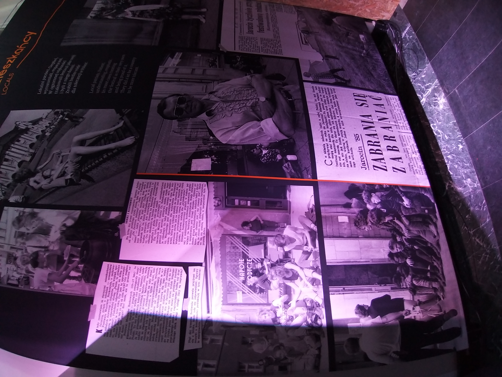

Trip to the Jarocin festival museum in Centrum
At the beginning of summer we visited an exhibition about the history of the Jarocin festival. It was a tremendously important place for the Polish youth in the 1980s. It helped them escape government repression, express their progressive political views and embrace western culture. The festival strengthened the Solidarność movement, which was a factor in abolishing Soviet control over Poland. The exhibition featured a variety of photos, documents and items, focusing on the 1983 edition. There was also a very interesting documentary shown in another room. It was a series of interviews about what the festival participants envisioned the future to be, comparing their perspective between the 1980s and the present day. We found that newspaper clippings with the attitude of the inhabitants of Jarocin to be the most interesting exhibits. We were surprised by how welcoming the people were towards the youth.
